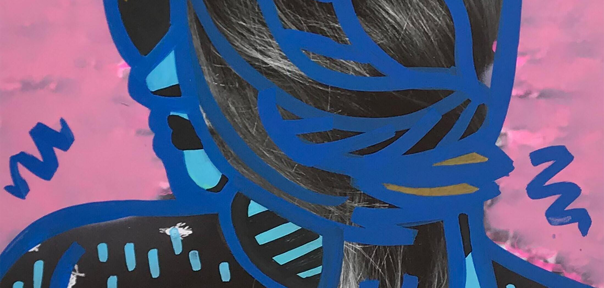

Om oss
Konstnärsnämnden är en statlig myndighet under regeringen. Inom Regeringskansliet ansvarar Kulturdepartementet för Konstnärsnämnden och konstnärspolitiken. Myndighetens övergripande uppgift är att främja möjligheter för konstnärer att vidareutveckla sitt konstnärskap, att främja konstnärlig utveckling och stödja nyskapande kultur. Konstnärsnämnden ska också analysera och sprida kunskap om konstnärernas ekonomiska och sociala villkor och bevaka trygghetssystemens utformning och tillämpning i förhållande till konstnärlig verksamhet.
